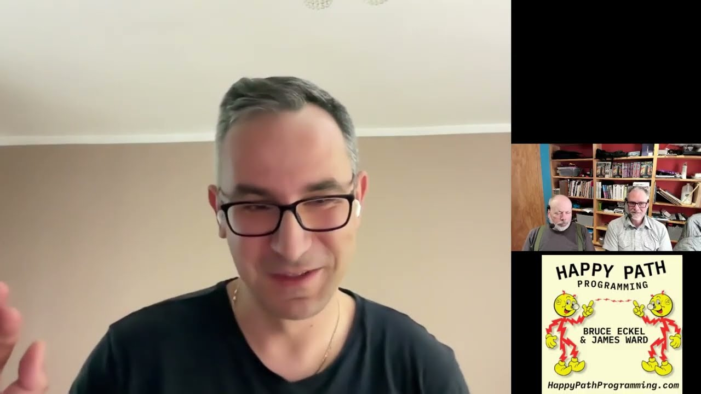

Aver AI-Native Programming Language with Szymon Teżewski

About this episode
We dive into the new Aver programming language with its creator, Szymon Teżewski: The AI-native language where code explains itself.
Aver is a language where every function carries its intent, side effects are visible in the type system, and tests are executable specs next to the code. The optimization target is the reviewer, not the generator.
Resources & links
Transcript
Generated automatically by Spotify, so expect the odd misheard word. Select a timestamp to play from there. Download (.srt)
Read the transcript
0:01 Welcome to Happy Path Programming. I'm Bruce Eckel. I'm James Ward. All right, welcome. Happy path programming. It's been a little while. I was travelling a lot and I'm travelling, spent some time on the river and so it's been good. But it's beautiful spring and Crested Butte. So we have, we don't have any conferences or retreats or anything coming up to announce. So not really, no. Yeah, just just normal to normal life. Here we go. Yeah, well, today we've got a good one. So we've got Simon who created an AI native programming language and we've been diving into this whole new area of of new languages emerging that are really centered around making the AI more efficient, work better. The thing that that is really interesting for me about Avor is that it couples some, a lot of things that we're interested in like effect systems, but then also adds into it this like validation side, which which I'm really interested in in because I think the as Aver says right on the website, it's, you know, easy for the AI to write the code. But then how do you validate the code? How do you how do you validate that what it wrote was what you intended?
1:16 Which is ultimately all we ever care about in a piece of software. Does it does it does it what we want it to do Yeah, yeah. And how how it gets there is yeah. But I'm, I'm also fascinated with this, the fact that you have trimmed out all of the, I would call them the human affordances in a language which I didn't even, I wasn't even really conscious of. But my understanding is that Aver says, all right, if we are doing any sort of looping, we'll use recursion. If we're doing any sort of decision making, we use pattern matching. And I'm not sure about this, but is everything is? Is all?
2:02 Are all values immutable or is that? Yes, yes. It doesn't seem so unsurfaced, but yeah, it's fully. So you're making all the values. So basically all of those extra features, we realize, oh, those are just for people. And the, and, and my, I mean, this was just an experience that I had because I had a, a set of examples that I was trying in different languages and I was having the AI generate the code for these examples. And it seemed to me like it did the aver version faster. And I'm thinking, well, maybe because it doesn't have as many choices to make, it's not looking at oh, should I use a four or whatever. It just goes oh I'm using.
2:48 Here is the way. There's one way to do these things, so is that. Yeah, maybe give us the the just high level, what is, what is aver and what are your, what were your design? Yeah, What's your philosophy? Yeah. So like Aver is language meant for AI to write code. But that's not the only, that's not the only thing. Because my assumption was that like riding coat becomes cheap and becomes even cheaper. Now AI is doing that. You don't need a lot of sugar like syntactic sugar, because AI can manage on its own. We don't need all this. Stuff the sugar for the humans and yeah, the syntactic. Sugar was meant for humans, but there is like A twist to that, which which I think is very important in Ava, is that this sugar, it's not really meant even for AI to to have only one choice, limiting choices, because that's also valid like design, design thing, yeah, but it's more like it's limiting the surface.
3:55 You have to review what is what, what was written in Avor later. So there is like minimum to enable. The human to also review quickly and have not have to understand you know complex type system things and and you know other use a for loop here versus recursion. And exactly why do I have ifs here and there? Or maybe like tannery operators and stuff like I can, I can write this all with match. I can match on values, I can match like some types or whatever. And it's just one thing. There is 11 keyword. But like I don't, I didn't want to minimise keyword. That was not my goal really. I wanted to make it really easy to review. And I don't know if you have, if you have managed to sing, but I, I've added a lot of these intent layers to it. So you have like every function, which is not trivial. And that's like not more than one line maybe let's say it has to have like this verified command, let's say, which says what it what it does really.
5:08 And all the functions which are not pure have this kind of effects attached to it. And also we have like I have decision blocks which are built into language. So something like AD Rs, I have chosen this and not that. And those can also point to. Architectural design records, yes. So those are decisions blocks in in AVR and you can basically say, yeah, I these dates and this person has chosen or this AI has chosen this and not that and point to specific symbols in the program. So it's like checked later that the function you're referring to, it's still there. It hasn't disappeared or something. So things that in the past would have just gone into comments maybe to explain why a particular design. Or maybe the rocking somewhere on consequence, because that's what I've usually seen.
6:04 Yeah, as a software engineer. Yeah, yeah. And so being able to have a record of those decisions that's in the code and actually is code is. Actually is is called this? Yeah, it's not maybe like fully, you can't have the function in there like function doing something, but you can point to stuff, yeah. So that you can cross reference things so that those decisions don't go out of date and stale because it was just in a in a comment or something somewhere, it's it actually gets validated against the the type system. So can you have? Can you build more sophisticated types? Not really. Types are really simple in Ivor you, you have generics, but in the sense that you can have a list of whatever and you can have a map of lists of whatever, etcetera. But you don't have like generally functions with your types.
7:02 That's impossible. So here you have right, two or three functions for for something because that's not yet supported. I'm not fully against that, but there is argument not to have it. The language is really simple on many many levels and adding generics it doesn't feel like that. Some things I will do soon. But you do have some some more advanced type system things like you have value dependent types. Is that accurate with with like like constructor assertions or something? I, I, I tend to, I tend. I've chosen this old MO path in there. So you have a module and module is its own world and it's can expose the can opaque expose the type.
7:50 Yeah. So it can be used to in the system in other modules, but it can only export a constructor for it. So it's not it's not revolution. Now you don't. I don't have really dependent types as as the as they are now used. But yeah, you have old ML trick built in. Yeah. So it's just like a. A constructor constraint is like. You can construct constraint, yes, but because language is so straightforward, I can use them later if we talk about verification and stuff as dependent types. Basically, you're not writing them as you do in Lean or or or Dafny, but they can't be lifted to once.
8:43 So in the native effect languages that I have looked at, it seems like most of them use handlers for their. In other words, when you call an effect, it jumps into a handler which has a continuation, so rather than a regular function call. So what are you doing for that? I don't have handles, it's. It's much simpler, Enable, to be honest, when I was preparing, I was thinking if I should even call them effects enable. And that's because they're not algebraic effects. That for sure. Yeah, you cannot handle. You cannot. There's not like a composition of.
9:28 Yeah, you don't have composition exactly. I was looking for that word. You don't have compositions of effects. They are more like transitive capabilities kind of things. So function has. More like a way to demarcate pure functions from from pure functions. Yes, yes, but it's also transitive. So what I mean by by that is that every function calling effectful function has to declare that effect or more. You know like closure of of of sub effects of all the functions. So. There is a little bit of an algebra on on that composition where if you if you touch a function that that writes to standard out and talks to the network, then both of those get composed like like. And I have also these granular effects which are much more granular than IO in Haskell or whatever, because I have like HTTP terminal, console and so on.
10:26 But they also have like sub effects. So you can only declare, I don't know, HTTP GET or POST for that function. Yeah. And you cannot like you can't shorthand to HTTP, but compiler will nag you that. OK, that's too broad. You shouldn't be using that. You are just using GET. But then there's then there's some almost like security model around that that you have as well, which is like, I only want to allow a get to this host or something. Yes, but I wouldn't call IT security because someone will jump on me. I think it's more of a safety feature. Yeah, and I'm not saying security because you have to trust the host here. Yeah. And the host language.
11:12 So it's more like a safety barrier for for your AI writing the code. So it doesn't like it's not declaring that you can call HTTP. So if you do, it's impossible like it will it will be that type error. Yeah, yeah. So I'm not, I mean, when I start thinking about AI languages and realizing, oh, because of what the AI can do, we may not need this or we may not need that that we have in traditional languages. So, so I'm, I'm, I'm looking at this and, and you said, all right, we're tracking the effects, but we're not using handlers, which may be OK because the AI is able to do more things than I know about, but what do you do with the effects that you're tracking?
12:09 We have couple of things like so, so first of all, they have to they are transitive so they have to go to the very uppers level. So that's your the first thing. So they're. It's like function colouring, but beyond a yes, you're. Tracking, yes. Yeah, async was the original function colour, and now you've got a. Rainbow slider, yeah, which I I don't like async because it's it makes the colouring, but like both ways you have async away and I don't like something like that here. It's much more simple, Yeah, it does one additional things that's maybe not on topic, but it forces your code to not have many like transitive levels with the effects because it gets out of hand.
12:55 Yeah, So it's 10 it. Feels dirty for. AI, it feels dirty so it makes you have this pure core yeah and effect full shell and it's like I didn't know when I was starting either that that's the outcome. But AI on it's only like OK, I don't like that I have 5 levels of of FX transitioning. So I will just I will just architecture really get rid of that. Yeah, yeah. Yeah. And there is one more thing about FX enabled that all of the effects, they are like predeclared by compiler. You cannot define your own at the moment, but you can record and replay. So when you when you run the program, you can record every effect that has happened and it's stored in the Jason file and you can replay that later.
13:48 So that's a convenience feature. So you can so you can verify that you get the same results. Yes, yes, you can verify that the effects were fired in the same order and consumed in this, because yeah, some of them are. Presumably the same values. Yes, our values are also start and there is like different levels also that for example you haven't consumed all the events like there is more in the, there is more in the file than to your program has. You can like diff the diff two runs and yes, yes, yeah. And that's an interesting approach because like if you have an effect that is a random number generator, the programmer needs to swap in a random number generator their own that generates non random numbers so that they can do the testing. But you're saying, well, actually all you have to do is record it and then if you replay? Replay, Yeah.
14:47 Then, then, then the programmer doesn't need to go to all that trouble, so it it simplifies that. Process, yes, and at the beginning that was the only mechanism to test effectful functions. But then I I've added like verify blocks for it and verify blocks or something in either that's probably needs it's own explaining and everything so. Before we get in the verify, there's maybe another thing that's nice about having the explicit effects in the world of Wazm, which maybe you've done, maybe you haven't yet, But in the world of Wazi, you can expose like, OK, this particular block of functionality has these side effects and you can express that through Wazi and Wazm components. And so that then the other side that's the consumer of that thing can decide how it wants to actually implement those pieces. So you because you've already defined the side effecting pieces, you could probably create the the accurate Wazi view of those those side effecting functions. Yeah.
15:55 And I was, I was playing with that, to be honest, I did Was it preview one first? But I didn't like what came out and I'm on was it preview 2 already? But I'm not doing this granular thing as I should be doing yet. But that's on on the on the wish list. Let's say so. Yeah, but it technically would be possible because you've. Technically that would be possible, yeah, because right now I'm I'm not yet exposing it as library in in WASI preview, only as as applications. So I mean like importing effects, not not yet exporting, let's say. Gotcha. And the different targets we were, we agreed that we liked the approach of having the. VM and the the native and the WASM outputs. I think that's one of the things that that you probably you would be more familiar than us about the challenges of Rust and you know, the long compilation times. And by having the VM it does create that short iteration loop with for the AI to iterate quickly and, you know, be able to do some some validation before you actually go to producing and linking a binary.
17:09 Yeah, that would be, but that would be really problematic for AI and because waiting times as you said. But I really started with interpreter as every, every, every small language is starting. And then I've added VM, which will at the time like 100 times faster or something. And it became like the main, main runtime. And as you said, I'm having this cold, cold Gen. for different for different things. So there is Rust called Gen. So you can basically compile to Rust, to to wasm and it's like garbage collected was I started with my own memory and everything, but it's then it occurred to me it's yeah, that's that's not needed.
17:57 Let's. Wasm runtime deal with all that? Let's let's not be as native in this in all of these targets as it possibly could be. That was my assumption. And like this garbage collection is already on pretty much everything, so it's not so new. So you had to implement your own garbage collector for the VM and for the native output and and we yeah. Was that a given The design constraints of the language, was that an easy task or a hard task to like? Like like figure out how to implement the garbage collector? For for Rust Colgan, I don't have to have garbage collection because it handled by rust. All those all those all those things in Rust RC and so on.
18:43 So it's like at compiled time it's checked for for correctness. Yeah, in Rust and. Does it actually generate Rust code and then you let the rust? That generates like the Rust Rust project for you, with all the modules even looking as as the either ones. But you have to compile it later to Rust and in VMI didn't really go for a real garbage collection. You may argue because I I went with like memory lanes, but that's the topic on its own. Because of the simplicity of the language, there is a lot of things that are not like in every regular language. For example, it's easy for me to to track when something should be and it's immutable as you said. So it's easy for me to say OK so this like TCO loop has ended and I can discard all the things.
19:43 You're like escape analysis is much more trivial. So it's like escape analysis on different yeah, on the on couple on couple different levels. So like you have this very local line of memory, then you have like TCO one, then you have one for the handoff and you have for the handoff from the functions, so return values, etcetera. And you have like the OK, they starve lifts forever pretty much because that's that's how the program is, is done. So how much AI were you using for the architecture, design and implementation? That's that's a really good question and I don't have a good answer for that because it depends at which state of paper. Yeah, because at the very beginning, I, I came up with idea pretty much on my own and then I like was ping pong in that idea with AI without even implementing it at the, at the at the moment. And then I went for implementation in which like probably 90% of code is written by I, I won't be saying no. I, I, I don't want to lie to you guys. It's, it's, it's true.
20:54 But like every decision that there is mine, there is no single decision that AI has made for me. And I've I've I've, I've argued a lot for the decisions that there are in neither because AI tends to, I don't know where it gets it from, maybe from the training data. That's the obvious explanation, but it tends to to force you do some stuff. It's. Going to steer you towards towards something it's familiar with and what you're doing. And I don't know, familiar is a good word. It's, it's it's just strange. I would have to come up with specific. Oh, the specific example is it was forcing me to have like AZ 3 invariants everywhere. Yeah.
21:46 And he was arguing that's the better choice for the design. And it's like a common topic really. And I didn't really want that because it seems like there is another language layer at at your language, which I really disliked and so on and so on. So there is a lot of topics like that that AI tends to force me to going in that direction, but I don't buy. Yeah, yeah. So you're, you're building the, you're building Avir, the actual like parser lecture VM, all that kind of stuff and Rust. And is that right? And then how are you, are you working in in some kind of markdown spec for the actual like PL. design or how do you do that piece of it?
22:32 I hate markdown. So no, not markdown spec, but it's coming from usually from a long conversation by and like arguing for, for my, my design decisions really. And the only AVR code I have I have ever really written is like example codes how I want specific things to look. So I'm, I'm writing AVR code sometimes to, to, to follow the design. And that's, that's, that's very common. To be honest, I haven't written a single program, but I've written a lot of lines to show the direction of how I want it to look. In in some ways your your spec is the like code examples like this is what I want. Yes, yes. This is what I want. This is what I want.
23:19 How can we achieve that? And then I have to learn a lot because I that's the first ever compiler I have written or I that's how can you write. I probably I wouldn't be able to do it so quickly and probably I wouldn't have chosen Rust because I, I, I like Rust, I can read Rust, but I find it hard to write Rust. So probably I would have chosen other language. We were curious if you had any intention as of self hosting avor at some point and self. Hosted. Yes, it's obscure option in there, but there is an interpreter in Avor in Avor. So. So it's the a lot of the Avor code is actually aver today. That's not the VM there is yeah, I was talking about targets and one of them is called self host.
24:17 Really So every like run function aver run and aver or maybe only aver run at this point. Yeah, I verify is not yet ported is running Aver in Aver interpreter and that interpreter right now it's it's going through this Rust content. So yeah, it's really over to Rust compiled and attached to to cargo. So, so it's fun, but that was just showcase, yeah, that it could be done. What's your?
24:54 Do you look at it in like? Because we're used to languages that have standard libraries. Do you look at it that way? Do you go, oh, we'll develop a standard library? Or do you look at it and say, well no, the AI will just generate whatever it needs to generate? Or is Rust your standard library? Yeah. No, Rust is not my standard library and I was. There is a really small standard library right now and it's all the functions you need at at at either I would say at the moment. So it's like integer from string and stuff like that. Yeah, so. Collection of libraries and. Collection of libraries, yeah. But to be honest, I've been pruning those the standard library more than expanding it at the moment because I had like two ways, for example, integer to string and string from integer.
25:53 And I was like, well, there's two ways to do thing, I should leave just one of those and so on and so on. And. So you, you then like replace that duplication with your lifting functionality and then you can like RIP out, you know, the, the stuff that was unnecessary boilerplate because now you had. It's just it's just boilerplate for for standard library at the moment. And I also started with map and fold on list and I've removed it at some point. Huh. What there is no. Yeah, what's, what's your, what's your like collection transformation, things that exist then in the standard library, nothing. And I'm not, I'm not, I'm not too much. You can derive everything.
26:44 Yeah, you can derive everything, pretty much everything. And you also don't have closures, so people will already like why, why? Why is that? But that's also the. AI doesn't need them I guess. AI doesn't need them. That's a syntax sugar. And I keep explaining that to people and people get angry about closures. I saying about no if statements, no loops and everything and then closures somehow, you know, light people up. I don't know why. But I mean, really all those all those functors on, you know, any, any type of data class is really just syntactic sugar for recursion and pattern matching, right? Like so you know you've got to I. Know it makes it easier for me to write code yeah when I'm writing code by hand, but doesn't make does it make review easier really Like there is you don't have one more function somewhere in the module because that's what usually it says just one function which is named right now and you can reason about what it's doing without looking at it even yeah.
27:51 Yeah, that's the part that I keep having to rewire my brain around. It's like, does this serve humans or does it, you know, is it something that's essential that the machine needs, you know, and, and what can we take away and still be able to, to, you know, maybe it's even easier or better for the machine to generate. Code, I wouldn't say it's easier because I was testing that that part and because there are other languages meant for AI and the main purpose of those languages is to make it easier for you for AI. And that was not my design goal, to be honest. Maybe, maybe it happens for other reasons, but what I did, I called it designed by inconvenience really. So I'm removing all the stuff that's not necessary, but other people tried, for example, okay, this language is minimizing the number of tokens that are used by AI. So you have like 1 one letter variables or something, or they're not named and etcetera.
28:58 It's hard for the human to review. Yeah, it's really hard for human to reason and validate. So my assumption was, OK, AI is writing it, it doesn't need a lot of sugar. It makes everything easier for me. Those targets as you said and everything. Language is really easy. There is no closures, No, not, not a lot of things that can go wrong still. It's complicated stuff, but not as complicated as regular languages. Yeah. And yeah, that just. Happened real quick. Before we get on a more deeper on validation stuff there, there was a few interesting tools that you have that you provide that are in the same vein. So you can do aver context and aver shape, which could be like helpful for the human, but also are really helpful for the AI to just understand the structure of things, the interconnectedness of things, and give us maybe a little more detail on those pieces. Yes.
29:57 So Iver has this non standard functions. The compiler compiler has or or commands. One of them is context. And it's like it's really obvious when you think of mean in introspection about it. So what the context is, is AI doesn't need to read all your code or human doesn't need to read all your code. It's just it needs the context for AI. It's called context because of AI really. And the context is like minimizes you of your program. And that's what's really easy to do because of the design of the language design. If you have this mandatory intent everywhere with all the functions, if you have those effects in there, it's really easy to export that without the function bodies. And usually that's good enough for AI to reason about what code is doing.
30:56 Yeah, yeah. So I can strip all the, all the F, all the, all the code from it and it's yeah. And it's still readable. And it also does this, this little trick in which you can say what your budget is. So for example, give me this program for 1010 kilobytes or something, because that's my, you know, that's my window for AI. I can spend. Yeah, yeah. Or focus on specific function, that's another one. Because for example, yeah, I want to start with this function and all its offsprings, whatever it's it's using, yeah. So you can kind of like, yeah, you can traverse down the context graph and because the context will give you the related pieces.
31:46 And so you can be like, OK, we're working here, but now we're going to switch over here and work. So now go get the context for this thing. So it's like lazy lazy context loading as you as you traverse. So you might start with like overview of whole program and then if you focus on specific modules or specific functions, we can dig deeper or give more budget in kilobytes if you wish. And AI is doing that. I I've seen it doing like there is cloud skill I've made for it and it's using it really, really often. And I find it really funny because I think codecs was doing that because I use quote code and codecs usually both of them and codecs like this Avercontext command so much that it's tried to use it on the Rust scope of compiler and then OK, that's not working on Rust, it's on the aver thing. And that's quite funny.
32:39 So what's your concurrency story? Oh, concurrency. I really wanted to have some concurrency in aver that I didn't want it to poison the whole language kind of a thing. And I've I think colouring like I think a white would be problematic. Yeah, it's a lot of to reason. I don't like reading cock with a single white. I didn't go with effects because you can use effects for a single white, but I don't have such complicated effects are like you have in the OR or or somewhere. So I'm I made this very simple observation that if you have a tuple with two functions or three or four, it's up to you.
33:38 You can reason about if those what they're what those functions are doing is independent or not. Is there any between them or something? Yeah, there is no short state between them and, but they might might be effects, There might be effects and like I didn't want a very compiler to guess for you because sometimes you can. You can do like 5 Http://posts because they are safe to do something there aren't. They have to be done in order. So it's asking you to to say if those are independent ones or those are regular ones and they have to be in order.
34:24 And you have just one gimmick at the end with exclamation mark, which is saying those are independent and can be run independent. It's more like this Haskell power that it's a hint for the compiler kind of a thing. So it can be done in any order, but it doesn't have to. And right now only Rust Colgan is really doing that in parallel. But yeah, that's in place. And it was really funny to wire it with the record and replay, if you can imagine, because then you have to reason about which branch it went on and so on. So it was problematic to do, but I managed to do that so so it's like it's working.
35:14 Did you go to to as far as like describing the like algebraic laws of the side effects so that you could determine if if something was commutative or associative or whatever so that then you in the type system could could derive the the the parallelization capabilities of a given side effect or? I was on that path, but I like I gave up. It's as I said, it's not always there are languages doing that. Yeah, that's the first thing already. And they try to reason for you. Iver is not that smart. It just tells you, OK, that might be problematic for some known shapes. Yeah, for some known shapes it can say, OK, you're doing this bright and red here, and that might not be what you want, but it doesn't stop you from doing that. At this point.
36:12 I didn't want when I have to review that code. That's one thing you have to really dig into what those functions, independent, independent product, independent tupple thing are doing. That's one thing you have to focus on reviewing right now. So it's not going to prevent you from having some race condition foot gun, but it does give you the ability to specify things such that if you've indicated that this is a place that I need to be careful of a race condition, then the compiler is going to help help you validate that. Yes, it will. It will say that might be problematic, but it won't stop you from doing that. Because it occurred to me that there might be valid scenarios and you're you're never smarter than than someone writing the code.
37:01 Yeah. Well, and often times when you're talking to an external system, it's really up to that external system what it's constraints are. You know, it's like, is this request item potent? Depends on how the server defines it, you know. You you use the word shape a lot and I think you have explored this idea that pieces of code have shapes. Yes, yeah, I really like that word. And I to be honest, I'm not sure if it's a good one in English, if you hear that as a, as a language designer, because to me, it occurred to me while reading the Ava code that the code, or maybe I'll start with the anecdote from Python, because I work also with Python a lot and a lot of Python code is kind of shapeless to me at the moment.
37:53 And what I mean by that, there is no strong core like that. I I don't immediately see what it's doing. You can't look at it and see, oh, that's a triangle, that's a square, that's. A yeah, that's a triangle. That's a square. OK, they're composed here and there and maybe something is ductile or whatever and I have to to reason a lot. But when I'm looking at Ava code, it occurred to me, OK, those functions are usually these or that. So this function is much Yeah, this function is recurrency. Those are this one is recurrent with the other one. And it's obvious when you're looking at the code because of the language limitations again.
38:41 So I, I've explored this idea of shape a lot. And as you asked me before, there is even command for that called aver shape which tries to, it's not really guessing. I would say it's saying that this function is only doing a single match in, in, in, in here. Yeah. Or this function is doing like like the pipeline thing in it. Yeah. So like checking something for error, checking another thing for error and if it's OK returning some some something. Yeah. Or other stuff like I think I have. I initially had like 9 or 10 such shapes, but I went with 14 at the moment and they are classified. And I also made this kind of tiny discovery of mine that when looking at the whole modules or folders, you can reason about what architectural layer that code is by the shape of like histogram of shapes of the functions. So for example, I have this pure call rich domain stuff. So there won't be a lot of effects in there. Yeah, there won't be, there will be all the mat, there will be some recursion in it, but not not a lot of effects for example and so on, so on.
40:05 So I and here the guessing part comes in that you can say OK, this coat statically statistically, sorry statistically should be. This layer of your program, like you don't mind or something, you can redefine what those are. So, so I'm not forcing my numbers on you. You can redefine what those should be for your own program, but you can basically have this additional layer of checking if the shape of each layer is what it should probably be. Yeah. It's just some examples of the shapes are like you can have a transformation layer would be a a typical kind of architectural layer, or you can have a business logic layer. And by looking at the the the the shape of something in Haver you can you can make some statistical assumptions of what that architectural layer shape.
41:04 Is yes exactly. And I've started with that. And then it occurred to me that there is one more layer to this, to this shape that sometimes there is 2 functions which are like in turn twined, for example, this function is only serving as the entry point for the other one. So I have like the for example, Fibonacci one real one which does like the recursion in it. And I have the other one which is just guarding the the input, for example. And I'm also kind of explored that idea right now a lot, yeah. OK, so let's talk about the validation side, since that's, I think one of the things that really differentiates ever is the ability to define, not just test like.
41:52 So we've got types and we've got functions with explicit inputs and outputs and effects. But then we we need to be able to validate that our intent was actually fulfilled. And so there's layers to that. You can write a kind of more imperative assertion style test for a given function, but then you can also write a proof using and underneath the covers you can export or use Lean or Dafny. So yeah, give us a little more on on that whole piece of the machinery. Yeah, I've started with really simple idea as always. So the real simple idea is I want tests Co located with the cult and that was meant to serve a similar purpose as this intent. Yes.
42:40 So something I don't really have to look at the body of the function. Sometimes it's easier to look at examples. Yeah, you have the you have the function and the format is putting the verify functions below just below the function. So I can see what it's doing on input and output side. And it was meant only for pure functions. But then I realised that there is more to it and they could be possibly more to it. So you have this example once, as you said. So it's the, it's the simple verify. But you can also have like verify, verify law. I called it, called it law. And then it's more like there is Python thing called crosshair. But there is a lot of it's, it's good like property testing. It seems on the surface a bit like a property testing. So you have like a given integer being 123 or 1000, yeah, or integers from one to 10,000 or something, these functions. And you can also have guards in there like given the the one integer, given the other one, and when one is larger than the other one or something like that. I'm invoking that function and knowing something about the output.
44:00 Yeah. And you can define a lot of laws that way really. So I don't know, A+B is equal B + A and so on and so on. So a lot of functions could be a lot of loss could be explained that way. It's a very simple way. To be honest, it's nothing. Nothing substantial that. So while the syntax looks similar to property based testing, you actually can can derive a proof essentially from from what? There are two two more levels to that because I'm the either verify So what is run in the VM or or or wasm. I'm just checking the examples. That's it. So it's the it's the fast and fast and easy one. And then I. Real quick.
44:45 So on in the VM you you essentially do you like property, just property based testing with with. Yeah, in the VM is just property based testing. Nothing, nothing fancy. But then there is hostile option to VM to to verify which does substitute those values for you. So for example you said that's integer and you provided some of them. And here are the nasty integers for you. Yeah, so I'm checking your your law against against nasty, nasty stuff. And that's also happens for the effects. So for example, because you can stab effects in those functions. Also when you verify effectful functions, you are just writing the function which is stabbing it.
45:31 So for example when I'm doing the disk read text, it returns this or that and that was a lot more like the. Effect handlers like so in the verify blocks you you can create the the mock implementation of what the what the? Yeah, yeah. But and you can use those like in verify those those examples, simple ones and in loss, yeah. And in loss they only in loss they are lifted. I I would say only in loss in hostile mode. I'm substituting it for for bad things again. So your disc burning clocks going other, other, other, other sites like rewinding clocks and so on or or random always returning one and and so on. And it says, OK, that's that log of yours might not be a a real log.
46:27 You might be missing guard or you might just want to provide examples. And those are not, those are not examples. You said it's it's something more than that. So that's this, this intermediate level of of checking. And there is one more which is exporting the exporting it's it's like a cold Gen., but there is a separate command for that which is overproof and overproof is doing a Dafny Orlean project for you out of overcode. And then in Dafny or lean, if you have example, example, verify which are not lost. It's just by example, which both Dafny and Lincoln easily do.
47:15 But if you have the slow ones, they are again lifted and they're lifted to for all the integers proof. Yeah. And about the effects, those are also lifted, but they're lifted through Oracle functions, if you're familiar with the term. So it means that for every possible function of clock which might be returning whatever the clock is returning, that holds true. Yeah, yeah. So in your in your lift to a actual proof, do you do you have to use AI to to actually derive the proof or do you can you do it totally deterministically?
48:03 That's, that's a really good question and I was exploring that idea too. So right now, no, I'm not using. I'm again exploring the shapes of the functions and I I wouldn't say it closes everything because it doesn't, but a lot of a lot of stuff is closed for you. A lot of proofs can be closed. So I'm again identifying shapes of the laws and shapes of the functions that are tested. And I can say, okay, this function is, oh, a good example is guarded like I have Fibonacci and Fibonacci is guarded by something. And then in lean, this, this guard is listed to subtype, for example.
48:53 And that's like a lean what, what, what lean person would write in there. Yeah, or the the, the opaque, the opaque natural module, which only has the constructor that is guarding it. It's also lifted to to to the subtype. So yeah, it's doing a lot of tricks like that and it's closing a lot of proof. I wouldn't say that's ideal. So some of the proofs are left for you to to prove. We've AI help maybe, or I will someday find a way to close all the gaps. Possibly. No, not. Never. Is there any way for the aver compiler outside of AI to know if something is closed or not If a proof is closed like? Right now I've I've added this pretty recently. I've added that it's not only like compiling to transpiling to lean or dafny, but also running it and when it runs it, it can check OK like I've closed this this this matter. Leaner dafni you can do the analysis on. Whether yeah, they, they, they, it's run, it's run against Lean or Dafni.
50:09 And I'm also exploring the idea right now of because some projects are doing the thing in which like they export to Lean or Dafni and they try different strategies in there and see what closes. I don't like that idea that much because I I'm like the code is in a very so simple. I usually can reason about it better than just guessing. But some some Daphne stuff you, you you have like the fuel budget in there and sometimes just raising this budget helps you close the proof. Yeah. So maybe, maybe I will add something like auto adjust or auto check and and try different strategies.
50:55 Yeah. Huh. And so then in your skills that you have for people that are using aver, do you say like, like, OK, you're gonna, you know, do this and write this code and you're gonna use this command to like check. And then, you know, once you once you get through that and you're good, then you're gonna run. And, you know, I don't know what the next step would be, but of ultimately get to like actually proof. And so like, does your skill kind of describe the actual workflow that the AI should use to like iterate quickly and then and then more completely, you know, as it moves kind of out or? How do you it describes? It describes all the tooling at the moment. But to be honest, I didn't want to switch everyone to to proof and to formal verification because that's my honest opinion.
51:49 I don't think every single program on earth needs to be formal for formally verified. Yeah, yeah, it's, it's up in. So if you want it, you can use that. It makes it easier for you. You might just like the very core, very core function of of yours. Maybe that's needed or very core module that's needed to be checked but. It's still up to the developer decide when they want to add a law into Yeah. Yeah, basically that law is yeah is magic word which which which does all the lifting and and proving but. So if you're so probably generally if somebody's working on kind of a algorithmic piece of code that that you know needs to the algorithm needs to work verifiably and consistently, then you would add a law. But if you're, you know, reading records from a database or something like that like that, the law is not super helpful in that case.
52:49 That there might be people arguing that's the ultimate goal. Yeah. And I also added these effects, effects in in proofs as those oracles and so on. But usually that's not what you're proving. Really. Yeah. That's not the part that people tend to prove because it's. So the skill doesn't say. This is the one workflow you must use on any piece of code that you're using. It describes. Here's the tools that are available, but then you still you lean on the developer choosing when they want to add a law and then and then once a law exists in the code, then then the skill is going to tell how to how to actually execute the the proof and stuff. So. All right, yeah, if he decides to towards the proof, which probably won't on its own because it's more complicated than those really simple example verify blocks, Yeah.
53:43 Yeah. Nice. Are there any other major features of of Ava that we haven't gone over? I think we covered pretty much all the interesting one, maybe one more that also in those very five blocks you can trace effects. So if you add the word trace in there, you might say, OK, this fired in this particular branch, for example of this of this independent products, or I had five HTTP GET calls or something like that. Yeah. What is your, what are you working on now? What are your plans going forward with the with the project? To be honest, I'm, I'm ripping apart the compiler right now. Yeah, yeah.
54:37 Because I, I think I, I possibly made some technical depth in there and I figured that out when working on recently on on the proof infrastructure. And I was like, OK, maybe that's finally the moment I have like the type ATR that's or stuff like that. So yeah, I'm reaping the compiler right now. So. To be honest, yeah. Yeah. And then yeah, what's after you get the new architecture in place? Are there other kind of big ideas you're looking to tackle or anything that on the on the kind of language feature side that you're thinking about?
55:26 Yeah, I'm, I'm thinking, I'm thinking about couple one of one arm of of this project is always the the proving site because that's, that's interesting. I, I find it really interesting to try to close all those, all those gaps that exist. So I have a lot of ideas on how to do that. And I'm even right now implementing this additional compiler internal layer of proof intermediate representation kind of a thing because it's different than what you what you need for, for transplation to, to to Rust or whatever. It's different here. You have different things to reason about. So that's something I'm I'm working on right now. Is it on that one real quick?
56:14 So this is maybe moving some of the validation closer to the the time of the AI writing code so that it can get more feedback quick, more quickly as it's it's doing it because iteration loops. Yeah, also also the compiler like works in that way that you can explains like there is a command to explain specific passes of the compiler. So we can AI or you you can reason about what this ever called is lifted to the interpreted to and so on. So OK, for example, for the proving, I OK, I've seen this type of yours, which seems to be dependent dependent the subtype in lean or could it be become subtype in lean or something like that. So it's easier for you to to reason about how the how the stuff is happening really.
57:16 Yeah, it's like I've, I've wondered at what point are AI, AI will have like AI integrated compilers that would almost like expose an AST of the compiled code to, to the AI instead of the actual textual representation. And that's like, you know, maybe something in the in the type system area. But then you are saying let's let's do something similar to that, but go into more of the validation realm as well beyond beyond just basic types. Yeah, that's, that's, that's possible. But also, to be honest, when I was checking something like that, because I was checking different ideas of how I work could potentially look, and it seemed to me like on the generation side, a current AI, current HoloLens are better used to have code as cold as we know it.
58:12 Yeah, yeah. It's not some, not some fancy fire fire ASD or interpretation or whatever of it. Yeah, yeah, I guess they're trained on natural language and so coded code is an more of a natural language to it than an ASD is. Yes yes, stay with this might be that might not be true in your future. We don't know about it. So the whole thing I'm building is a huge but about capabilities and what's happening with AI and future. But I'm seeing it more like a funny experiment of mine to be honest. I. Are you tracking the other languages that are being are coming out of this?
58:58 I I've I've seen a bunch of them close to 30 like at the moment or something yes, yes, so many of them and there is there is a very good website which right now tries to track them agent languages deaf or something yeah, he's my creator of one of them. So, so you should you should take like usually they don't have a huge following and it's the guy even split them into three different categories, let's say, and I've landed in verification 1. So, so the languages which focus on verification and there are ones that are focused more on orchestration for AI kind of a thing. So in the some.
59:49 That are more focused on like token efficiency. Yeah. And that's like the syntactic or or some comp as the guy has described it. And I would say Avalon's in both syntactic and and verification for for AI but but there are different things you can optimise for and I find it's quite funny to look at the other languages they feel like. Like like a mirror very often I I I look at them at the mirror. There is there is theme in there going on which I think that's AI forcing people to do, which is having all the requires and ensures Z3 blocks everywhere. So yeah, maybe that's forced by AI. I'm not sure. I'm not sure.
1:00:36 Maybe people are coming up this design everyone at. Yeah. Because that, even though that's been pushed for a long time, it's not something that programmers have been commonly doing. So the fact that the AI is doing it is interesting, Yeah. Maybe if you ask, you know, specific questions, specific enough, it comes with this answer at the moment. That may change in a couple of months, we don't know. That's kind of interesting. I think AI is doing people building those languages a lot, including including me. I'm not saying I'm I feel immune. Yeah, yeah. Yeah, when it's we have such a great opportunity to do experiments and and then I'm sure that many people are doing in these experiments and probably uncovering common truths or something as they've done the experiments the. Facts are one of the common truths it seems. I do Cursed, basically.
1:01:36 Pretty much all of those languages have some form of the effects, yeah. Sometimes much more complicated than I was one, yeah. One thing I'm curious about your perspective on is if you write a function definition, just the like inputs and outputs and effects and the the intent string, and then you write a test or a law for that function, how valuable is the body of that function? The the actual implementation? Like does it as a human, do I even care if like, you know, I've got the inputs and outputs and intent and effects and the, the test, the the verifications of that function? Like do I ever need to care about how the AI came up with the actual body of that thing?
1:02:27 I, I really love the question. That's the first thing because I was thinking about it a lot. I was thinking about it a lot because one may argue that you don't need a body at at this, at this moment, like bodies redundant. It's described, it's has the test. So let AI write the body. I don't agree at the moment. I think that bodies there first of all saving as a proof of what was done, what was achieved and I love the shape of it. I can reason about the things from the shape of of this body. Maybe you as as someone reviewing that. When I'm looking at diverse coats, I'm usually skipping the bodies to be honest. They are not the most interesting part, but I can see the shapes of them pretty easily. So I don't need to go deeper into 5th line or somewhere I already seen.
1:03:25 It's the match one. I like pattern matched it just by eyeballing it. And I think that's that's really something. And I find it only after I've done all the language, all the design decisions behind it and then looking at the code, I will like why? Why did that's that happened? That's that's really something that's really something interesting. And it all comes from what I've stripped from the language and AI. I think it's having more difficult time writing a neighbor because it has to to fit into those shapes. Yeah, yeah. So I don't think it's easier for AII would say it's a little bit trickier than in regular language. But then it forces it to have a very distinct shapes in the code, a very because someone might also argue that it's it's the same thing written three times because you have the intent, you have the body and you have the verify blog.
1:04:27 At the very beginning, I was thinking, OK, that's something that we can catch AI by by hands saying, OK, you, you have to you have to say it three times for it to be more true kind of a thing. So you won't, you won't imagine it or I don't know how to, how to describe it, but it's like you have to write the very same thing three times. So it's like more true is to more more true. Yeah, like. Yeah, I guess there's there's a triangle of validation that you're that that is that all comes together so that you can have confidence in your code. Just as an example, I've seen jokes about AI creating, you say like create a, a random function and you know, it's like like if you know input is 1, then this. And you know, you see like all these like if then statements where the AI like like only covered, you know, six of the cases or whatever.
1:05:28 And maybe you're like property based testing or, or law based testing would would catch that kind of thing. But it's like the AI like clearly like took a shortcut here. And instead of like coming up with the general implementation of this thing, it it did the lazy way and being able to actually look at the body and be like, Oh yeah, like, like that body actually does match my intent. It does. It's not just taking the shortcut route is probably an important piece of the verification system. And then probably the iterative loop to get there as well as like often you don't know how to fully specify something until you've like iterated a few times on the body. And so there's probably also this like like iteration that's enabled by having all three instead of having the body be hidden. Yeah.
1:06:20 But there's one more interesting thing I would add to what you said, because one thing is I can't. I think about AI as being cooperative in favour because I can't guarantee that the intent that's written and the verify blogs that are written are what you really meant. Yeah, like I, I, it's, it's not treating AI as, I don't know, a spy trying to sneak something bad or, or stuff like that. Because I, I can't assure that I can't think about a way to, to even prove. Like prove is proving whatever was written there to prove, you have to read the read what's trying to be proved. You you don't assume it's, it's true. You can, you can verify that it's always true. Like that's, that's not verifying anything. So you still have to read that and stamp it. It becomes like legalese in Python, but you still have to do that.
1:07:23 I'm not saying it has. It's not meant to be to be. Read it. Wasn't it wasn't more than a few months ago I asked the AI to write a test for me and it was a test against a particularly complex bit of code and it tried and then it ultimately just landed on assert true. And that was. The test, yeah. And I've seen that in in AI languages that you have for example, the Z3 ensures blocks somewhere there they are usually at the function close to function definition. So like effects in either and there is ensures true. So that's like, OK, it just doesn't ensures anything. But it's there serving us as you know how to describe that even yeah, as proof of nothing. Proof of nothing.
1:08:15 Yeah, exactly. And so I think that is the challenge with with where the human is needed in the verification loop is that we express intent and then it's up to us to validate that our intent was actually fulfilled by the the written body, the type signatures and the and the tests and and verification and laws and all that that we write. So it's the human is responsible for doing that to to we bring the trust that our intention was actually achieved. And so, so the language needs to enable us as humans to provide that that validation. Of intense language can do as much as being easy to read, not hide stuff as Ivor is doing because I also think closures and all the syntax, the syntax sugar are might be hiding it. You have to reason more.
1:09:10 Maybe you have to read less, but you have to reason more kind of a thing. And also by by the language design, you can make some errors impossible to express in a language. That's that's what I was initially exploring a lot. So, you know, decisions like there are no exceptions obvious ones right now. Yeah, we've we've the monads returning stuff and so on. So you can prevent like matches have to be exhaustive. You don't I don't have Eves because match is exhaustive and it's checked for exhaustiveness, for example. So there is things you can do and there are things you cannot do. You can't assure intent was was expressed as you want it to be. Awesome.
1:10:00 Well, thank you so much for your work on Neighbor and, and love to see the, all the, the great things that you've brought out with that with the facts and, and laws and proofs and, and great tooling for the AI and human readability. And yeah, it's, I think it's super exciting to see what you're, what you're building. So yeah, thank you for all the all the work you do on it.